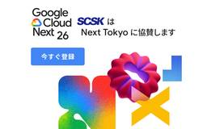

TechHarmony
https://blog.usize-tech.com
エンジニアブログ by SCSK
フィード

Cato API (GraphQL) による設定管理・ログ集計の自動化手法と活用例
TechHarmony
こんにちは。Catoエンジニアの中山です。 今回はAPIやTerraform等のツールを使い、CatoをCMA（Cato Management Application）を使わずに運用する方法を紹介したいと思います。 普段 […]
7時間前

受賞者リレーインタビュー！第17弾：八巻 綾太さん
TechHarmony
TechHarmonyエンジニアブログでは、AWS・Oracle Cloud・Azure・Google Cloud 各分野の受賞者にフォーカスし、インタビューを通してこれまでの経歴や他の受賞者に聞いてみたいことをつないで […]
14時間前

【速報】Amazon Bedrock Managed Knowledge Baseが日本語対応…！？
TechHarmony
こんにちは、ひるたんぬです。 今回は前回のブログ記事でもご紹介しました、Bedrock Managed Knowledge Baseにつきまして、今までは一部正しく回答が生成できなかった日本語ドキュメントのファイル形式に […]
2日前
Cato Networks APJ Partner Summit 2026開催、SCSKセキュリティは4年連続パートナーアワード受賞
TechHarmony
2026/07/09（木）に、Cato Networks社のパートナーサミット「Cato Networks APJ Partner Summit 2026」がタイ・プーケットにて開催されました。 今年（2026年）で4回 […]
2日前

Google Cloud Next Tokyo へ出展のお知らせ
TechHarmony
皆さん、こんにちは！SCSK株式会社の大野です。 今年も、Google Cloudが主催する最大級のカンファレンス**「Google Cloud Next Tokyo ’26」**が、7月30日・31日の2日 […]
3日前

Cisco Secure Access の AI Access機能を試してみた① 〜シャドーAIの可視化・制御編〜
TechHarmony
こんにちは、SCSKセキュリティのふくしまです。 Cisco Secure Access技術ブログ第二弾として、今回はAI Access機能（シャドーAIの可視化・制御）について検証した内容をご紹介します。 第一弾ではC […]
7日前

忙しい人のための LifeKeeper for Windows v10.0 構築前に確認するチェック項目
TechHarmony
こんにちは、SCSKの伊藤です。 本記事では、前回のLinux版と同様に LifeKeeper for Windows v10 の構築前に確認しておくチェック項目をご紹介します。 Linux版の記事はこちら […]
8日前
復旧まで数ヶ月か、数日か。大手冷凍食品メーカーの事例に学ぶ、事業継続の新常識
TechHarmony
こんにちは、SCSKのマーケティング担当です。 今週、国内の大手冷凍食品メーカーのサーバーがサイバー攻撃を受け、冷蔵倉庫の入出庫や出荷業務が停止・遅延したというニュースが世間を騒がしています。 […]
8日前
【AWS Summit Japan 2026参加レポート】巨大な会場に圧倒！ 2027はどうなる！？
TechHarmony
こんにちは！SCSKの今村です。 レポが遅くなりましたが💦私も2026年6月25日（木）26日（金）の2日間、幕張メッセで開催された「AWS Summit Japan 2026」に参加してきました。 本記事では、AWS […]
8日前
mackerelでネットワーク機器監視はできる？実際に検証して分かった2つの実現方法
TechHarmony
こんにちは。SCSKの嶋谷です。 mackerelはエージェント型の監視ツールのため、ネットワーク機器のようなエージェント導入不可の機器を監視できないと思っていませんか？ ネットワーク機器のようにエージェントを導入できな […]
9日前
【AWS Summit Japan 2026】使われるAIエージェントの作り方 ～御田稔さんのセッションに学ぶ3つの工夫～
TechHarmony
はじめまして！SCSKの末光と申します。 2026年6月25日（木）・26日（金）に幕張メッセで開催された「AWS Summit Japan 2026」に参加してきました。 本記事では、会場全体で感じた技術トレンドと、特 […]
10日前
休日の障害でシステム停止？——LifeKeeperが防ぐ、見えないリスク
TechHarmony
こんにちは、SCSK 池田です。 コロナ禍をきっかけとしてリモートワークが定着(最近はオフィス回帰も聞かれますが・・・)しましたが、セキュリティの観点で、特に個人情報を扱うシステムの運用保守では、オフィスからのシステム接 […]
11日前
【現地レポート】Zabbix全国セミナー2026 in 札幌に参加してきました！
TechHarmony
こんにちは、SCSKの坂木です。 2026年7月10日（金）、札幌で開催された Zabbix全国セミナー2026＜札幌会場＞ に参加してきました！ 今回は、SCSKから 中野 祐輔氏が 【Zabbix × AI】AIエー […]
11日前
受賞者リレーインタビュー！第16弾：松渕 健太さん
TechHarmony
TechHarmonyエンジニアブログでは、AWS・Oracle Cloud・Azure・Google Cloud 各分野の受賞者にフォーカスし、インタビューを通してこれまでの経歴や他の受賞者に聞いてみたいことをつないで […]
11日前
Cato エンタープライズブラウザとは？～設定・検証してみた～
TechHarmony
様々な事情（委託先のPC、BYOD等）で存在する「業務で使用するが、会社が管理していないデバイス」への対応には、各企業が頭を悩ませていると思います。 上記のようなデバイスは誰かの私物であったり、他社の資産であることから、 […]
15日前
Kong連載第4回 生成AIの企業利用を安全に。マルチLLM時代を制する「Kong AI Gateway」の実力
TechHarmony
こんにちは。SCSKの石田です。 Kong連載記事の第4回をお届けします。 前回の第3回では、インフラ運用の負担を劇的に軽減し、セキュアなハイブリッド環境を実現するSaaS型管理基盤「Kong Konnect」について解 […]
16日前
【AWS Summit Japan 2026 参加レポート】 ～業務・運用を変える2つのAIエージェント～
TechHarmony
はじめまして！SCSKの後藤です。 2026年6月25日・26日の2日間、幕張メッセで開催された「AWS Summit Japan 2026」に参加してきました。AWS Summitは、AWS（Amazon Web Se […]
16日前
Snowflakeのエージェント評価機能を触ってみた ～Snowflake CoWorkのテスト自動化へ～
TechHarmony
こんにちは、SCSK斉藤です🐧 SCSKでは現在、社内のデータ活用基盤としてSnowflakeを採用しており、Snowflake CoWorkの利用についても検証を行っています Snowflake Intelligenc […]
16日前
【連載 Dropboxのキホン 第2回】Dropboxの『選択型同期』活用術：PCが重い・容量不足を解決！
TechHarmony
第1回では『デスクトップアプリのインストール方法』について解説しましたが、今回はさらに一歩進んで、多くのユーザーが悩む『PCのストレージ容量問題』を解決する「選択型同期」機能に焦点を当てます。 本記事では、Dropbox […]
16日前
Claude Code に要望を伝え続けたら数時間で3Dゲームが完成した話
TechHarmony
コードを1行も書かず、アセットも買わず、2日で3Dゲームができました。 やったことは「こうして」「ああして」とレビューしていただけ。 使ったツールはClaude Codeだけ。 自然言語で指示を出し続けたら、Godotで […]
16日前
AWS Summit Japan 2026参加レポート ～AIエージェントとAWS DevOps Agent～
TechHarmony
はじめに はじめまして！SCSKの長谷川です。 今回AWS Summit Japan 2026に参加してきたため、イベントレポートを書かせていただきます！ 私はこれまでAWSに少し触れた経験はあるものの、AWS Summ […]
16日前
受賞者リレーインタビュー！第15弾：磯野 桃子さん
TechHarmony
TechHarmonyエンジニアブログでは、AWS・Oracle Cloud・Azure・Google Cloud 各分野の受賞者にフォーカスし、インタビューを通してこれまでの経歴や他の受賞者に聞いてみたいことをつないで […]
18日前
Ansibleを使用してNW機器設定を自動化する（FortiGate-サービスグループ編①）
TechHarmony
はじめに 当記事は、日常の運用業務（NW機器設定）の自動化により、運用コストの削減 および 運用品質の向上 を目標に 「Ansible」を使用し、様々なNW機器設定を自動化してみようと 試みた記事です。 Ansibleは […]
18日前
Cato AIセキュリティプラットフォームでAIセキュリティ設定・検証してみた ～エージェント向けAIセキュリティ編～
TechHarmony
Cato AIセキュリティプラットフォームにて、エージェント向けAIセキュリティの提供が新たにスタートしました。 これまではChatGPTやGemini等のAIツールを利用する際のユーザー向けAIセキュリティや、独自に構 […]
18日前
【Zabbix × Backlog検証】Zabbixの障害通知をBacklogの課題として自動起票・クローズ連携する方法
TechHarmony
こんにちは！ SCSKの新沼です。 システム監視で障害を検知したあと、皆さんはチームメンバーへの連携や対応タスクの管理をどのように行っていますか？ 今回は、Zabbixで障害の検知を行い、対応タスクの管理は別ツールで手動 […]
18日前
【参加レポート】若手インフラエンジニアからみたAWS Summit Japan 2026
TechHarmony
こんにちは。SCSK和泉です。 2026年6月25日,26日に幕張メッセで開催された「AWS Summit Japan 2026」に参加しました。 本記事では、インフラエンジニアの観点から、AWS Summit Japa […]
18日前
【初参加レポート】AWS Summit 2026 ～AWSとクラウド移行～
TechHarmony
初めまして！SCSKの木村です。 2026年6月25日（木）・26日（金）に幕張メッセだ開催されたAWS Summit 2026に参加してきたので、 現地の雰囲気や感想、気になったサービスを紹介したいと思います！ AWS […]
18日前
【AWS Summit 2026】開発初心者が「AWS Blocks」を使って、簡易生成AIアプリ作ってみた
TechHarmony
はじめまして。SCSKの山本です。 このたび「AWS Summit 2026」に参加しましたので、セッションを通じて得られた知見を記事としてご紹介します。 本記事では、「AWS Blocks」というサービスについて、ご紹 […]
18日前
【ServiceNow】データテーブルウィジェットにフィルターを追加
TechHarmony
こんにちは。SCSKの北川です。 ServiceNowには、テーブルデータを一覧表示できる「データテーブルウィジェット」が用意されています。データテーブルウィジェットには、URLで表示内容を制御する方式と、ウィジェットイ […]
22日前
Catoクラウドの情報収集はこちらから
TechHarmony
Catoクラウドのイベント・セミナー関連の情報です。 はじめに SCSKセキュリティでは、Catoクラウドに関する3種類のセミナーを通年で実施しています。 簡単解説セミナー（ウェ […]
22日前
Cisco Duoとは？MFAを中核とした主要機能及び、活用事例を紹介
TechHarmony
こんにちは！SCSKセキュリティのタカハシです。 今回はCiscoのアイデンティティセキュリティソリューションであるCisco Duoについて紹介します。 Cisco Duoとはどのような製品なのか、主要機能や活用事例を […]
22日前
メトリクスフィルターを介さない CloudWatch Log Alarm の仕組みと使いどころ
TechHarmony
Amazon CloudWatch で、ログクエリをもとに直接アラームを作成できるようになりました。 従来は CloudWatch Logs の内容を監視したい場合、メトリクスフィルターを作成し、そのメトリクスに対して […]
22日前
【AWS1年生】AWS Summit 2026初参加レポート
TechHarmony
みなさま初めまして！SCSKの井上です。 今回がTechHarmony初投稿となります。 「AWS Summit 2026」に参加してきたので、現地レポをお届けしたいと思います！ 2026年6月25日（木）・26日（金） […]
22日前
Claude Sonnet 5 公開 / Fable 5 規制解除 / Desktop on Bedrock で Chat がベータ版ほか、2026年6月まとめ
TechHarmony
こんにちは。SCSK渡辺(大)です。 6月に発表されたAWS・Anthropicおよびその周辺の主要ニュースを「誰が知るべきか」「何が変わるのか」の観点で、Kiroに整理してもらいました。文体の統一感がない箇所があります […]
23日前
Amazon Bedrock Managed Knowledge BaseをCloudFormationでデプロイする
TechHarmony
こんにちは、ひるたんぬです。 ニュースなどでよく「今日は全国的に…」と耳にする機会があり、それを聞くと「日本全体で…なんだなぁ」とぼんやり思う今日このごろですが、なぜ、「全国＝日本全体」なのでしょうか？ 思い返すと子ども […]
24日前
AgentCore Harness × Managed KBで作るフルマネージドなAI Agent
TechHarmony
こんにちは、SCSK竜崎です。 2026年6月25日、26日にAWS Summitが開催され、無事に終了しましたね〜 自分は今年から初めて参戦して、非常に面白く学びの多いイベントだったなと感じました！ 特に今回はAIをテ […]
24日前
ZabbixでWebサイトを監視する方法｜設定手順から障害アラートまで画像付きで解説
TechHarmony
こんにちは、SCSKの坂木です。 Zabbixには、Webサイトの死活や応答時間、ステータスコードを監視できる Web監視（Webシナリオ） 機能があります。エージェント不要・Zabbixサーバーから直接HTTP/HTT […]
24日前
【初心者向け】AWS Healthイベントを自動通知する方法（EventBridge編）
TechHarmony
皆さん、こんにちは！秋葉です。 AWSを使っていると、「あれ、このインスタンス調子悪いな？」と思ったら実はAWS側の障害だったり、メンテナンスのメールを見逃して強制再起動がかかったり……という経験はありませんか？ 今回は […]
24日前
【AWS】WorkSpaces Cost Optimizerマスターに向けて（応用編）
TechHarmony
皆さん、お疲れ様です！秋葉です。 前回の基礎編では、Amazon WorkSpaces Cost Optimizerの概要と主要な設定パラメータについて解説しました。 【AWS】WorkSpaces Cost Optim […]
24日前
【AWS】WorkSpaces Cost Optimizerマスターに向けて（基礎編）
TechHarmony
皆さん、お疲れ様です！秋葉です。 最近、お客様から「AWSの利用料、もう少し安くならない？」と相談を受けることはありませんか？ 特に VDI（仮想デスクトップ）環境である Amazon WorkSpaces は、便利で手 […]
24日前
「共有リンクを作成した操作ログの抽出」の依頼に対応してみた！
TechHarmony
Dropboxの共有リンクは、ファイルやフォルダをすばやく共有できる便利な機能です。日常業務でも使いやすく、情報共有のスピードを高めやすい一方で、運用が進むほど「どのファイルやフォルダに対して共有リンクが作成されたのか」 […]
24日前
BCPの死角、IT基盤の停止〜DRとHAの違いを知るリスク管理
TechHarmony
こんにちは。ＳＣＳＫの池田です。 今回は、多くの企業で「対策済み」と思われがちなBCPにおけるIT基盤のリスク——特にDR（災害復旧）とHA（高可用性）の違いについて解説していきます。「DRさえあれば大丈夫」という安易な […]
25日前
忙しい人のための LifeKeeper for Linux v10.0 構築前に確認するチェック項目
TechHarmony
こんにちは、SCSKの伊藤です。 担当から「OS構築が終わった！」と連絡があり、いざLifeKeeperの構築が始まったところ、パラメーター設定やパッケージ導入が全然されていなかった！ そんなことで、構築作業の開始が1週 […]
25日前
2026年版 エンドポイントセキュリティ再設計―AI攻撃、ID侵害、未知マルウェアにどう備えるか
TechHarmony
みなさん、こんにちは。 SCSKの石井です。 まだ6月なのに、いやもう6月下旬なのに雨も多い中、暑いですね、特に2026年夏は「エルニーニョでも暑い夏」🌞に。。（もうやめて・・苦笑） 私が出ようとしたときに限って、雨。。 […]
25日前
【ServiceNow】Pearson VUEでの受験体験記 in London
TechHarmony
こんにちは。SCSKの吉田です。 ロンドンのテストセンターで受験し、日英米の3か国でServiceNowの認定資格を受験しました。 昨年ServiceNowの試験プラットフォームがPearson VUEに移行されてから初 […]
25日前
【Cortex Cloud】Agentless Disk Scanとは？Cloud ScanとOutpost Scanの違いを徹底解説
TechHarmony
Cortex Cloudでは、クラウド上の仮想マシンに専用のエージェントをインストールせずに、ディスク内の脆弱性やマルウェア、機密情報を検出できます。 この仕組みが、Agentless Disk Scanです。 Agen […]
25日前
Zabbix×Claude Codeでモジュール開発
TechHarmony
こんにちは。SCSK小寺です。 私の20台の頃の目標に、オープンソースのプロジェクトに参加して、機能追加、バグ修正をしたいという目標がありました。 ただ、時間もなく、仕事に追われ、漠然とした夢となっていました。 ここ最近 […]
25日前
USiZE出展レポート@日経クロステックNEXT関西2026
TechHarmony
こんにちは。SCSKの分目です。 2026年6月11日・12日、グランフロント大阪コングレコンベンションセンターで開催された「日経クロステックNEXT関西2026」に、SCSKの国産プライベートクラウド「USiZE(ユー […]
25日前
【New Relic】AWSインテグレーション設定の仕方
TechHarmony
本記事では、New RelicにおけるAWSインテグレーションの概要および仕組みについて解説します。AWS環境の監視を効率的に実現するためには、CloudWatchメトリクスおよびログをNew Relicへ適切に連携し、 […]
25日前
受賞者リレーインタビュー！第14弾：宮崎 慎二さん
TechHarmony
TechHarmonyエンジニアブログでは、AWS・Oracle Cloud・Azure・Google Cloud 各分野の受賞者にフォーカスし、インタビューを通してこれまでの経歴や他の受賞者に聞いてみたいことをつないで […]
1ヶ月前